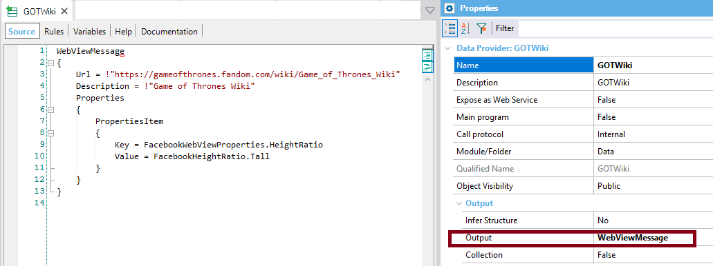

Message types supported for Facebook Messenger Channels API
This article shows the different message types supported by the Facebook Messenger Channels API. For specific information on this API, see Howto: Chatbots using Facebook Messenger. In all the examples, the GeneXusChannels.Message.SendMessage API is used. Text MessageExample&Message.Text = !"Hello world" //&Message is GeneXusChannels.Message data type. GeneXusChannels.Message.SendMessage(&ChannelConfiguration, &Message, &Messages) //&ChannelConfiguration is of ChannelConfiguration SDT. &Messages is GeneXus.Common.Messages. Grid MessageIt's mapped with Generic Template data type. ExampleIn the Chatbots sample using Facebook Messenger see the SendMessagesFb object. Basically, it does the following:
&ChannelConfiguration = GetConfiguration() //Gets the configuration of the channnel.
&Message = GetGOTCharacters()
Do 'SendMessage'
Sub 'SendMessage'
GeneXusChannels.Message.SendMessage(&ChannelConfiguration, &Message, &Messages)
msg(Format(!"%1 result: %2", &Message.Text, &Messages.ToJson()), status)
EndSub
The GetGOTCharacters procedure calls a data provider (GOTCharacters) which returns a GeneXusChannels.Message parameter (&GridMessage in the example). Note that the &Message payload Type is "PayloadTypes.Grid" and Body has to be assigned to the JSON data of the message. GetGOTCharacters procedure: &GridMessage = GOTCharacters() &Message.Text = !"The winter is here ;)" &Message.Payload.Type = PayloadTypes.Grid &Message.Payload.Body = &GridMessage.ToJson() Take a look at the GOTCharacters data provider to understand how it should be implemented: The following domains are used in the example:
For more information on how to configure the channel, take a look at Howto: Chatbots using Facebook Messenger. Media MessageIt allows sending images and videos. It maps with Media Template on Facebook. ExampleIn the Chatbots sample using Facebook Messenger see the SendMessagesFb object. Take a look at this code.
&Message = GetGOTAppVideo()
Do 'SendMessage'
Sub 'SendMessage'
GeneXusChannels.Message.SendMessage(&ChannelConfiguration, &Message, &Messages)
msg(Format(!"%1 result: %2", &Message.Text, &Messages.ToJson()), status)
EndSub
Open the GetGOTAppVideo object to understand more in detail how it works: &Message.Text = !"Let me introduce you to the GOT app!" &MediaMessage = GOTAppVideo() &Message.Payload.Type = PayloadTypes.Media &Message.Payload.Body = &MediaMessage.ToJson() Web View MessageIt allows rendering a web site to the chat. It maps with URL button on Facebook. ExampleIn the Chatbots sample using Facebook Messenger see the SendMessagesFb object. Take a look at this code.
&Message = GetGOTWiki()
Do 'SendMessage'
Sub 'SendMessage'
GeneXusChannels.Message.SendMessage(&ChannelConfiguration, &Message, &Messages)
msg(Format(!"%1 result: %2", &Message.Text, &Messages.ToJson()), status)
EndSub
Open the GetGOTWiki object to understand more in detail how it works (it calls a data provider that returns the WebViewMessage): &Message.Text = !"This is the wiki of GOT:" &WebViewMessage = GOTWiki() &Message.Payload.Type = PayloadTypes.WebView &Message.Payload.Body = &WebViewMessage.ToJson() The GOTWiki data provider is as shown below. Note that the output of the data provider is WebViewMessage.  The following domains are used in the example:
At runtime: Quick replies messageIt allows the user to answer based on quick answers. It maps with Quick replies on Facebook. ExampleSee at the Chatbots sample using Facebook Messenger the SendMessagesFb object. Take a look at this code.
&Message = GetGOTFavorites()
Do 'SendMessage'
Sub 'SendMessage'
GeneXusChannels.Message.SendMessage(&ChannelConfiguration, &Message, &Messages)
msg(Format(!"%1 result: %2", &Message.Text, &Messages.ToJson()), status)
EndSub
The GetGOTFavorites procedure looks as shown below. It calls a data provider called GOTFavorites. &Message.Text = !"Think fast!" &QuickRepliesMessage = GOTFavorites() &Message.Payload.Type = PayloadTypes.QuickReplies &Message.Payload.Body = &QuickRepliesMessage.ToJson() The GOTFavorites data provider has an output based on QuickRepliesMessage SDT.
The following domains are used in the example:
At runtime: Example 2&Message.Text = !"Send QuickReplies" &QuickRepliesMessage.Text = !"¿Are you sure?" //Yes &QuickReply = new() &QuickReply.Text = !"Yes" &QuickReplyProperty = new() &QuickReplyProperty.Key = FacebookQuickRepliesProperties.ContentType &QuickReplyProperty.Value = FacebookQuickRepliesContentTypes.Text &QuickReply.Properties.Add(&QuickReplyProperty) &QuickReplyProperty = new() &QuickReplyProperty.Key = FacebookQuickRepliesProperties.ImageUrl &QuickReplyProperty.Value = !"http://pngimg.com/uploads/image.png" &QuickReply.Properties.Add(&QuickReplyProperty) &QuickRepliesMessage.Replies.Add(&QuickReply) //No &QuickReply = new() &QuickReply.Text = !"No" &QuickReplyProperty = new() &QuickReplyProperty.Key = FacebookQuickRepliesProperties.ContentType &QuickReplyProperty.Value = FacebookQuickRepliesContentTypes.Text &QuickReply.Properties.Add(&QuickReplyProperty) &QuickRepliesMessage.Replies.Add(&QuickReply) //Location &QuickReply = new() &QuickReply.Text = !"Location" &QuickReplyProperty = new() &QuickReplyProperty.Key = FacebookQuickRepliesProperties.ContentType &QuickReplyProperty.Value = FacebookQuickRepliesContentTypes.Location &QuickReply.Properties.Add(&QuickReplyProperty) &QuickRepliesMessage.Replies.Add(&QuickReply) //Phone &QuickReply = new() &QuickReply.Text = !"Call" &QuickReplyProperty = new() &QuickReplyProperty.Key = FacebookQuickRepliesProperties.ContentType &QuickReplyProperty.Value = FacebookQuickRepliesContentTypes.PhoneNumber &QuickReply.Properties.Add(&QuickReplyProperty) &QuickRepliesMessage.Replies.Add(&QuickReply) //Email &QuickReply = new() &QuickReply.Text = !"Email" &QuickReplyProperty = new() &QuickReplyProperty.Key = FacebookQuickRepliesProperties.ContentType &QuickReplyProperty.Value = FacebookQuickRepliesContentTypes.Email &QuickReply.Properties.Add(&QuickReplyProperty) &QuickRepliesMessage.Replies.Add(&QuickReply) &Message.Payload.Type = PayloadTypes.QuickReplies &Message.Payload.Body = &QuickRepliesMessage.ToJson() See also
|

| Backlinks | ||
| Toc:Chatbots in GeneXus | KB:Chatbots sample using Facebook Messenger | Howto: Chatbots using Facebook Messenger |